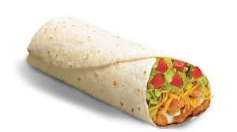

Burritos - Receita

Ingredientes
- 350 Carne Moída
- 1 Tomate Picado(s/sementes)
- 1 Colher (sopa) Extrato de Tomate
- 5 colher (sopa) de Milho
- 1 Pimentão Verde (Pequeno) picado
- 1/2 Chavena (chá) de Bacon Picado
- Salsicha e Cebolinha
- Paprica Picante
- Pimenta Chipottle
Preparação
- Numa panela adicione o bacon e frite até começar a soltar gordura, junte a carne moída e frite rapidamente e adicione os temperos (alho, pimenta chipottle, pimenta do reino, paprica picante e sal) e deixe fritar até ficar bem sequinha.
- Junte os outros ingredientes (extrato de tomate, milho, pimentão, tomate) misture e adicione cerca de 2 colhres (sopa) de água e deixe cozinhar até o tomate ficar murcho e a água secar bem.
- Espere o recheio esfriar um pouco e prepare como desejar e aproveite.